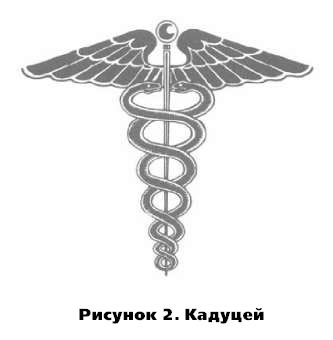
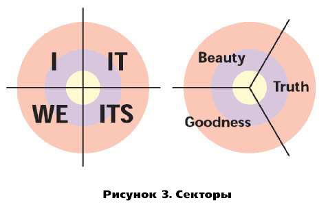
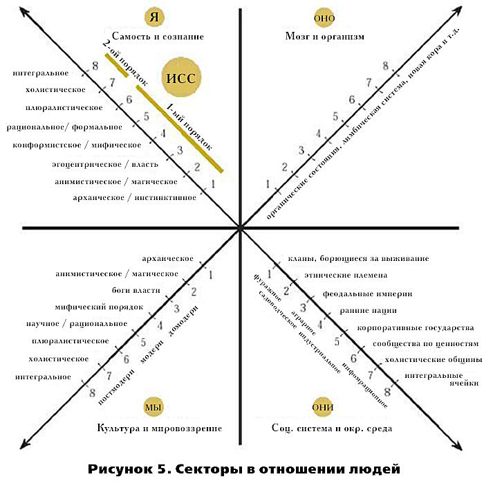

Об авторе: КЕН УИЛБЕР, возраст 56 лет, стал первым философом-психологом, который ещё при жизни увидел публикацию своего собрания сочинений. Написав 25 книг, изданных более чем на 30 языках, он является самым широко переводимым академическим автором США. Уилбер получил международное признание как инициатор интегральной теории и основатель Интегрального института. Интегральная вебстраница Кен Уилбер © 2003—2004 Integral Naked. За последние тридцать лет мы стали свидетелями не имеющей исторических прецедентов ситуации: теперь нам доступны все культуры мира. В прошлые времена, если вы, скажем, рождались китайцем, то, скорее всего, вам суждено было просуществовать всю свою жизнь в одной культуре, нередко в одной провинции, иногда в одном доме, живя, любя и умирая на нескольких пядях земли. Однако сегодня люди не только географически мобильны, — мы можем изучать и изучили практически все известные культуры на планете. В глобальной деревне все культуры обнажены перед остальными. Само знание теперь глобально, и это значит, что (также впервые в истории) нам доступна вся совокупность человеческого знания — открытия, опыт, мудрость и размышления всех основных цивилизаций человечества — досовременных, современных и постсовременных — доступны любому желающему их изучить. Что если бы мы взяли буквально всё, что могут нам рассказать о человеческом потенциале — духовном, психологическом и социальном развитии — всевозможные культуры и разложили это перед собой? Что если бы мы попытались найти существенно важные ключи к развитию человека, основываясь на всей совокупности человеческого знания, теперь доступного нам? Что если бы мы, основываясь на обширных межкультурных исследованиях, попытались использовать все великие мировые традиции, чтобы создать составную карту, исчерпывающую карту, всеохватную или интегральную карту, которая включала бы лучшие элементы всех этих культур? Звучит трудно, сложно, пугающе? В некотором смысле, да. Однако в другом смысле, результат оказался неожиданно простым и элегантным. Последние несколько десятилетий и вправду вёлся экстенсивный поиск исчерпывающей карты человеческого потенциала. Эта карта использует все известные системы и модели человеческого развития — от древних шаманов и мудрецов до сегодняшних прорывов в когнитивных науках — и получает дистиллят их главных компонентов в виде 5 простых факторов, факторов, которые являются важными элементами или ключами к отпиранию и ускорению эволюции человека. Добро пожаловать в Интегральную Модель. Что это за 5 элементов? Мы называем их секторы [quadrants], уровни, линии, состояния и типы. Как вы далее увидите, все эти элементы находятся здесь, прямо сейчас, доступные вашему собственному сознаванию. Эти 5 элементов не являются просто лишь теоретическими концепциями: это аспекты вашего собственного опыта, контуры вашего собственного сознания, что вы с лёгкостью сможете сами для себя проверить по мере того, как мы продолжим данные рассуждения. В чём смысл использования этой интегральной карты или модели? Во-первых, неважно, работаете ли вы в бизнесе, медицине, психотерапии, юриспруденции, экологии или просто каждый день живёте и учитесь, интегральная карта помогает убедиться в том, что вы «затрагиваете все основы». Если вы попытаетесь перелететь Скалистые горы, чем точнее будет располагаемая вами карта, тем меньше вероятность, что вы разобьётесь. При помощи интегрального подхода можно убедиться в том, что в отношении любой ситуации мы используем весь имеющийся спектр ресурсов, намного увеличивая тем самым свои шансы на успех. Во-вторых, если вы научитесь находить 5 этих элементов в своём собственном сознавании — и оттого, что они присутствуют там вне зависимости от чего-либо, — тогда вы с большей лёгкостью можете их ценить, тренировать и использовать… и тем самым в огромной степени ускорить свой собственный рост и развитие к более высоким, более широким, более глубоким способам бытия. Простое знакомство с 5 элементами интегральной модели позволит вам более легко и полно сориентироваться в этом захватывающем путешествии на пути к раскрытию и пробуждению. Если вкратце, интегральный подход позволяет вам видеть и себя, и мир вокруг более исчерпывающими и эффективными способами. Важно, однако, с самого начала понять один момент: интегральная карта — это всего лишь карта. Это не территория. Совершенно определённо: мы не хотим путать карту с территорией, — однако так же не хотим мы работать и с неточной или ошибочной картой. Интегральная карта — это всего лишь карта, но она является наиболее полной и точной картой из тех, что доступны нам сегодня. ИОС просто означает интегральная операционная система. В сфере информационных сетей операционная система представляет собой инфраструктуру, которая позволяет работать различным софтверным программам. Мы используем термин интегральная операционная система, или ИОС, в качестве фразы — синонима интегральной карты. За этим просто стоит идея, что если вы по жизни работаете с каким-то «софтверным обеспечением» — как, например, ваш бизнес, работа, игра или отношения, — вы хотели бы иметь лучшую операционную систему из всех возможных, и ИОС удовлетворяет именно этому критерию: затрагивая все основы, она позволяет использовать наиболее эффективные программы. Это просто ещё один способ говорить об исчерпывающей и включающей природе интегральной модели. Также мы будем исследовать то, что, возможно, является самым важным применением интегральной карты или операционной системы. Поскольку ИОС можно использовать для того, чтобы помочь индексировать любую деятельность — от искусства до танца, от бизнеса до психологии, от политики до экологии, — она позволяет каждой из этих областей общаться друг с другом. Вместе с ИОС бизнес получает терминологию, при помощи которой он может полноценно общаться с экологией, которая может общаться с искусством, которое может общаться с юриспруденцией, которая может общаться и с поэзией, и с образованием, и с медициной, и с духовностью. В истории человечества подобное действительно никогда ещё не случалось. В Интегральном университете [и Интегральном институте] благодаря применению интегральной карты, или интегральной операционной системы, мы получили возможность проводить и неимоверно ускорять междисциплинарное и наддисциплинарное познание, создавая тем самым первое в мире интегральное образовательное сообщество. Но всё начинается с этих простых 5 элементов в пределах вашего собственного сознания. Как мы уже сказали, все аспекты этих 5 элементов интегральной модели доступны вам прямо сейчас в вашем же сознавании. Таким образом, мы получаем в некотором смысле экскурсию с путеводителем по вашему собственному опыту. Так почему бы вам не пойти вместе с нами и не посмотреть, можете ли вы узнать некоторые из этих свойств, прямо сейчас возникающих в вашем сознавании. Часть этих свойств касается субъективных реальностей в вас, часть касается объективных реальностей там, в мире, в то время как другие касаются коллективных или коммунальных реальностей, разделяемых между людьми. Давайте начнём с состояний сознания, которые относятся к субъективным реальностям. Каждый человек знаком с основными состояниями сознания — такими, как бодрствование, сновидение и глубокий сон. Прямо сейчас вы пребываете в бодрствующем состоянии сознания (или, если вы устали, в полусонном состоянии сознания). Бывают совершенно разные состояния сознания, включая медитативные состояния (вызванные занятиями йогой, созерцанием, медитацией и т. д.), изменённые состояния (к примеру, индуцированные при помощи психоактивных веществ) и разнообразные пиковые переживания, многие из которых могут вызываться интенсивными переживаниями, вроде занятия любовью, прогулки на природе или прослушивания прекрасной музыки. Великие традиции духовной мудрости (такие, как христианский мистицизм, индуизм Веданты, буддизм ваджраяны и иудейская Каббала) утверждают, что 3 естественных состояния сознания — бодрствование, сновидение и глубокий бесформенный сон — в действительности открывают нам сокровища духовной мудрости и духовного пробуждения… если мы понимаем, как верно их использовать. В определённом смысле, который мы исследуем по мере своего продвижения, три великих естественных состояния бодрствования, сновидения и глубокого сна содержат в себе весь спектр духовного просветления. Но на более простом и приземлённом уровне, каждый встречался с различного рода состояниями сознания, и данные состояния нередко придают и вам, и другим людям глубинную мотивацию, смысл и побуждения. В каждой отдельно взятой ситуации состояния сознания могут быть не очень значимым фактором или же они могут быть решающим фактором, однако ни один интегральный подход не может допустить того, чтобы они игнорировались. Всякий раз, когда вы будете использовать ИОС, вы автоматически должны будете посмотреть и удостовериться в том, что вы учитываете все основные моменты этих важных субъективных реальностей. Вот интересная особенность состояний сознания: они приходят и уходят. Даже глубокие пиковые переживания или изменённые состояния, неважно сколь глубоки они, придут к вам ненадолго, погостят, а затем исчезнут. Независимо от того, насколько глубок их потенциал, все они имеют временный характер. В то время, как состояния сознания временны, стадии сознания постоянны. Стадии представляют собой настоящие верстовые столбы роста и развития. Как только вы достигаете какой-либо стадии, она становится устойчивым приобретением. К примеру, как только ребёнок развивается через лингвистические стадии развития, он получает постоянный доступ к языку. Язык не является чем-то, что присутствует одну минуту, а на следующую исчезает. То же самое происходит и с другими типами развития. Когда вы стабильно достигаете стадии роста и развития, вы получаете доступ к качествам этой стадии — как, например, большее сознание, более охватывающая любовь, более высокие этические побуждения, большие разумность и сознавание — практически в любой момент по вашему желанию. Приходящие состояния превратились в постоянные черты. Сколько существует стадий развития? Ну, не забывайте, что в отношении любой карты тот способ, которым вы разделяете и представляете действительную территорию, в некоторой степени выбирается произвольно. Например, сколько градусов между точкой заморозки и точкой кипения воды? Если вы используете шкалу или «карту» Цельсия, то между ними 100 градусов. Однако если вы используете шкалу Фаренгейта, вода замораживается при 32 градусах, а кипит при 212, так что между ними 180 градусов. Который из вариантов правильный? Оба. Всё зависит от того, каким образом вы желаете разделить сей пирог. То же верно и для стадий. Есть множество различных способов для разделения и фрагментации развития, — стало быть, есть множество различных стадийных концепций. Все они могут быть полезны. Система чакр, к примеру, предусматривает 7 основных стадий или уровней сознания. Жан Гебсер (Jean Gebser), знаменитый антрополог, говорит о 5 стадиях: архаической, магической, мифической, рациональной и интегральной. Некоторые западные психологические модели имеют 8, 12 или более уровней развития. Что из всего этого правильно? Всё, и выбор зависит лишь от того, за чем вы желаете уследить в процессе роста и развития. «Стадии развития» также называются «уровнями развития», и идея заключается в том, что каждая стадия представляет собой уровень организации или уровень сложности. Например, в последовательности от атомов к молекулам, к клеткам, к организмам каждая из этих эволюционных стадий имеет всё больший уровень сложности. Слово «уровень» не несёт жёсткого или исключающего значения, а всего лишь указывает на то, что с каждым уровнем появляются значимые эмерджентные качества, возникающие в дискретной или квантовой манере, и эти уровни развития являются важными аспектами многих естественных феноменов. В интегральной модели мы, как правило, работаем с 8—10 стадиями или уровнями развития сознания. После многих лет практической работы мы обнаружили, что подразделение на большее число стадий слишком громоздко, а на меньшее — слишком туманно. Одна из концепций стадий, которые нередко нами используется, является Интегральной Спиральной Динамикой (Spiral Dynamics Integral), основанной Доном Беком на базе исследований Клэра Грейвза (Clare Graves). Мы также обращаемся к стадиям развития самости, впервые обнаруженным Джейн Лёвинджер (Jane Loevinger) и Сьюзанн Кук-Гройтер (Susann Cook-Greuter), и порядкам сознания, исследованным Робертом Киганом (Robert Kegan). Но есть и много других полезных стадийных концепций, доступных интегральному подходу, и вы можете принять на вооружение любые из них, если они более уместны для ваших целей. Чтобы продемонстрировать, что связано с представлением об уровнях или стадиях, можно прибегнуть к очень простой модели, имеющей лишь 3 уровня. Если рассмотреть, например, моральное [нравственное] развитие, то мы обнаружим, что при рождении младенец ещё не социализирован относительно культурных, этических и конвенциональных норм, — это получило название доконвенциональной стадии. Она также называется эгоцентрической стадией, потому что сознавание младенца по большему счёту поглощено самим собой. Но по мере того, как маленький ребёнок обучается нормам и правилам своей культуры, он развивается до конвенциональной стадии развития морали. Данная стадия ещё получила название этноцентрической, поскольку ребёнок центрируется на определённой группе, племени, клане или нации, тем самым, как правило, исключая тех, кто не принадлежит его группе, из круга своей заботы. Однако на следующей основной стадии морального развития — постконвенциональной стадии — тождественность индивида опять расширяется, на сей раз чтобы включить в круг своей заботы и интересов всех людей, независимо от расы, цвета кожи, пола или состояния, и именно поэтому данная стадия получила также название мироцентрической. Таким образом, моральное развитие, как правило, продвигается от «меня» (эгоцентризм) к «нам» (этноцентризм) и затем ко «всем нам» (мироцентризм), что служит прекрасным примером постадийного раскрытия сознания. Эти 3 стадии можно изобразить и иным способом — в виде тела, ума и духа. Все эти слова имеют множество других валидных значений, но когда мы специальным образом касаемся стадий, они значат следующее: Стадия 1, в которой доминирует моя грубая физическая реальность, представляет собой «телесную» стадию (используя слово «тело» в его обычном значении грубого тела). Поскольку вы отождествляетесь лишь с отдельным телесным организмом и его инстинктами выживания, эта стадия также являет собой стадию «меня». Стадия 2 представляет собой «умственную» стадию, в которой ваша тождественность выходит за пределы изолированного грубого тела и расширяется до взаимоотношений со многими другими, основываясь, к примеру, на ваших совместных ценностях, взаимных интересах, общих идеалах или разделённых мечтах. Поскольку я могу использовать свой ум для того, чтобы принимать роль других — надеть их шляпу и прочувствовать, на что похоже быть ими, — моя тождественность расширяется от «меня» до «нас» (продвижение от эгоцентризма к этноцентризму). Вместе с 3 стадией моя тождественность вновь расширяется, на сей раз от отождествлённости с «нами» до отождествлённости со «всеми нами» (продвижение от этноцентризма к мироцентризму). Тут я начинаю понимать, что в дополнение к замечательному разнообразию людей и культур между ними есть также и общие черты и разделённая общность. Открытие содружества всех людей представляется сдвигом от этноцентризма к мироцентризму и является «духовным» в смысле вещей, разделённых между всеми обладающими сознанием существами. Это один из вариантов рассмотрения раскрытия от тела к уму и затем к духу, где те рассматриваются в виде стадий, волн или уровней раскрытия заботы и сознания, продвигающегося от эгоцентризма и этноцентризма к мироцентризму. Мы ещё будем возвращаться к стадиям эволюции и развития, всякий раз исследуя их под новым углом. Всё, что требуется сейчас, это понимание, что под «стадиями» мы имеем в виду прогрессирующие и постоянные верстовые столбы, расставленные на протяжении эволюционного пути вашего собственного раскрытия. Независимо от того, говорим мы о стадиях сознания, стадиях энергии, стадиях культуры, стадиях духовной реализации или стадиях морального развития и т. д., мы ведём речь об этих важных и фундаментальных ступенях раскрытия ваших более высоких, более глубоких и более обширных потенциалов. Когда бы вы ни применяли ИОС, вы автоматически должны посмотреть и убедиться, что вы включили важные стадийные аспекты любой ситуации, и это драматическим образом повысит ваши шансы на успех, — неважно, измеряете ли вы его в терминах личной трансформации, социального изменения, достижений в бизнесе, заботы о других или простого удовлетворения от жизни. Замечали ли вы когда-нибудь, сколь неравномерно буквально все из нас развиты? Кто-то высоко развит, скажем, в области логического мышления, но плохо развит в сфере эмоциональных ощущений. Некоторые люди обладают высоким когнитивным развитием (они очень умны), но плохим моральным развитием (они грубы и злобны). Некоторые преуспевают в эмоциональном интеллекте, но неспособны сложить дважды два. Говард Гарднер сильно прославил эту идею, введя концепцию множественного интеллекта [multiple intelligences — букв. «множественные способности»]. Люди обладают целым рядом интеллектов, как, например, когнитивный интеллект, эмоциональный интеллект, музыкальный интеллект, кинестетический интеллект и т.д. Большинство людей хорошо преуспевают в одной или двух способностях, но плохо в других. Это не обязательно (и даже не как правило) плохо: часть интегральной мудрости состоит в том, чтобы найти, в чём человек преуспевает и, тем самым, где он лучше всего может предложить миру ценнейшие из своих даров. Но это действительно значит, что нам необходимо осознавать как свои сильные стороны (или способности, благодаря которым мы можем сиять), так и свои слабые стороны (то, в чём мы развиты плохо или даже патологически). И это ведёт нас к следующему из 5 важных элементов — к множеству наших способностей, или линий развития. До сих пор мы затронули лишь состояния и стадии, так что же представляют собой линии или множественные способности? В число различных множественных способностей входят: когнитивная, межличностная, моральная, эмоциональная и эстетическая. Почему мы называем их ещё и линиями развития? Потому что эти способности демонстрируют рост и развитие. Они раскрываются в прогрессирующих стадиях. Что эти прогрессирующие стадии представляют? Стадии, которые мы только что описали. Иными словами, любая из множества способностей развивается — или может развиваться — через 3 основных стадии (или через любые стадии любой из существующих моделей развития, будь то 3-стадийных, 5-стадийных, 7-стадийных или включающих большее количество стадий; не забывайте, это подобно шкалам Цельсия и Фаренгейта). Вы можете, например, в когнитивном плане развиться до стадии 1, стадии 2 и стадии 3. То же самое касается и других способностей. Эмоциональное развитие до стадии 1 означает, что я развил в себе способность к эмоциям, сосредотачивающимся на «мне» — в особенности к эмоциям и драйвам утоления голода, выживания и самозащиты. Если вы продолжаете своё эмоциональное развитие от стадии 1 к стадии 2 — или от эгоцентрической стадии к этноцентрической — вы расширяетесь от «меня» к «нам» и начинаете развитие эмоциональных приверженностей и привязанностей к любимым людям, членам своей семьи, близким друзьям и, возможно, ко всему своему племени или нации. Если вы вырастаете до эмоций 3 стадии, вы развиваете в себе большую способность к заботе и состраданию, которая выходит за пределы вашего племени или вашей нации и предпринимает попытку включить всех людей или даже всех существ, обладающих сознанием, в объятия мироцентрической заботы и сострадания. И помните, что, поскольку это стадии развития, вы приобретаете их на постоянной основе. До того, как это случается, любые из этих способностей будут всего лишь преходящими состояниями: вы будете включаться в некоторые из них (если вообще будете) на ограниченное время — глубокие пиковые переживания расширенности познания и бытия, чудесные «эврика!»-переживания, глубинные изменённые, украдкой брошенные взгляды на свой высший потенциал. Однако по мере практики вы превратите эти состояния в стадии, или постоянные характеристики вашей собственной территории. Есть довольно простой способ представить эти способности или множественные линии. На рисунке 1 мы изобразили простой график, показывающий три основных стадии (или уровня развития) и пять играющих наиболее важную роль способностей (или линий развития). Различные линии раскрываются через последовательность основных стадий, или уровней, развития. Эти 3 уровня, или стадии, могут быть приложены к любой линии развития — сексуальной, когнитивной, духовной, эмоциональной, моральной и т. д. На рисунке 1 мы изобразили кого-то, кто преуспевает в когнитивном развитии, хорош в моральном развитии, но плохо развит в своей способности к межличностному общению и очень плохо в отношении эмоциональной способности. Разные люди, разумеется, будут иметь разные «психограммы». Психограмма помогает узнать, в чём состоят ваши потенциально наиболее сильные стороны. Скорее всего, вы уже знаете, в чём вы хорошо преуспеваете, а в чём плохо. Но часть интегрального подхода состоит в том, чтобы научиться более точно понимать ваши собственные пределы с тем, чтобы вы могли более уверенно взаимодействовать и со своими слабостями и сильными сторонами, и со слабыми и сильными сторонами других людей. Психограмма помогает нам также увидеть, как неравномерно буквально все из нас развиты, — тем самым, она спасает нас от ошибки такого образа мышления, при котором мы бы думали, что только лишь по той причине, что мы гениальны в чём-то одном, то мы должны быть гениальны во всём. На самом деле, как правило, всё наоборот. Многие лидеры, духовные учители и политики с треском провалились из-за отсутствия понимания таких простых реальностей. Быть «интегрально развитым» не означает, что вы должны преуспевать во всех ведомых способностях или что все ваши линии должны быть на 3 уровне. Однако это значит, что вы должны развить в себе очень хорошее понимание того, что в действительности ваша собственная психограмма собой представляет, так чтобы вы были способны планировать своё дальнейшее развитие, имея намного более интегральный образ себя. Для некоторых людей это и вправду будет вести к необходимости усилить определённые свои способности, которые настолько слабо развиты, что создают им проблемы. Для других это будет значить разрешение серьёзной проблемы или патологии в определённой линии (как, например, эмоционально-сексуальной). А для третьих это означает всего лишь учитывание того, в чём заключаются их сильные и слабые стороны, и построение планов в соответствии с этим знанием. При помощи интегральной карты мы можем с большей уверенностью определить свою точную психограмму. Таким образом, быть «интегрально информированным» не значит, что вы должны стать мастером всех линий развития, — вы должны всего лишь осознавать их. Если вы затем решите ликвидировать какую-либо дисгармонию, это совершается в рамках интегральной преобразующей практики, которая обычно помогает увеличить уровни развития при помощи интегрированного подхода. Отметьте ещё одну крайне важную вещь. В определённых типах психологических и духовных тренингов вы можете познакомиться с целым спектром состояний сознания и переживаний тела прямо с самого начала — в форме пиковых переживаний, опыта медитации, шаманских состояний, изменённых состояний и т. д. Причина, по которой это возможно, кроется в том, что многие из основных состояний сознания (таких, как грубое бодрствование, тонкое сновидение и причинная бесформенность) есть всегда доступные возможности. Так что вас можно очень быстро познакомить со многими высшими состояниями сознания. Однако вы не сможете ознакомиться со всеми качествами высших стадий без реального развития и практики. Вы можете пережить пиковый опыт более высоких состояний, ведь многие из них доступны всегда. Но вы не можете пережить пиковый опыт более высокой стадии, поскольку стадии разворачиваются последовательно. Стадии выстраиваются на основании своих предшественников весьма фиксированным образом, посему их нельзя пропустить: в случае, подобном последовательности от атомов к молекулам, к клеткам, к организмам, вы не можете перейти от атомов прямо к клеткам, пропустив молекулы. Это одно из многих существенных различий между состояниями и стадиями. Тем не менее, при регулярной практике установления контакта с высшими состояниями ваши собственные стадии развития, как правило, будут раскрываться намного быстрее и легче. На самом деле есть весомые экспериментальные данные, которые демонстрируют верность именно этого: чем больше вы включаетесь в аутентичные высшие состояния сознания — такие, как медитативные состояния, — тем быстрее вы перерастёте и разовьётесь через любые из стадий сознания. Это как если бы практика высших состояний выступала в роли смазочного аппарата для спирали развития, который помогает вам растождествиться от низшей стадии с тем, чтобы следующая, более высокая стадия, могла занять её место, до тех пор, пока вы не окажетесь способны стабильно и на постоянной основе пребывать в более высоких уровнях сознавания, где преходящее состояние становится постоянной чертой. Такие типы практик высших состояний, как медитация, являются частью любого интегрального подхода к личной трансформации. Если кратко, то нельзя пропустить реальные стадии, однако можно ускорить своё развитие через них при помощи использования различных типов интегральной преобразующей практики, и эти трансформирующие практики играют важную роль в интегральном подходе. Следующий компонент прост: каждый из предыдущих компонентов обладает мужественным [маскулинным] и женственным [фемининным] типом. Под этим подразумеваются две основные идеи: первая имеет отношение к идее самих типов, вторая — к мужественности и женственности как одному из примеров этих типов. Типы просто относятся к вещам, которые могут присутствовать фактически на любой стадии или в любом состоянии. Примером обычной типологии является типология Майерс — Бриггс [опросник Майерс — Бриггс разработан Катериной Кук Бриггс совместно с дочерью Изабеллой Бриггс Майерс на основе концепции К. Г. Юнга о психологических типах, — прим. пер.] (основные типы в которой: чувствующий, мыслящий, сенсорный и интуитивный). Вы можете принадлежать любому из этих типов буквально на каждой стадии развития. «Горизонтальные типологии» такого рода способны приносить большую пользу, особенно если их скомбинировать вместе с уровнями, линиями и состояниями. Чтобы показать, что типологии включают, мы можем использовать пример «мужественности» и «женственности». Кэрол Гиллиган в своей невероятно влиятельной книге «Иным голосом» (In a Different Voice) указала на то, что и мужчины, и женщины, как правило, проходят развитие через 3 или 4 основных уровня, или стадии, морального развития. Гиллиган, ссылаясь на значительное количество исследовательских данных, отметила, что эти 3 или 4 моральных стадии можно назвать доконвенциональной, конвенциональной, постконвенциональной и интегрированной. Эти стадии в действительности весьма аналогичны тем 3 простых стадиям развития, которые мы используем, — на сей раз в приложении к моральному интеллекту. Гиллиган обнаружила, что стадия 1 представляет собой нравственность, всецело сосредоточенную на «мне» (поэтому данная доконвенциональная стадия, или уровень, также называется эгоцентрической). Моральное развитие стадии 2 сосредоточено на «нас» таким образом, что моя тождественность вышла за пределы только лишь меня и расширилась до включения других людей в мою группу (поэтому данная конвенциональная стадия нередко называется этноцентрической, традиционалистской или конформистской). Начиная со стадии 3 морального развития моя тождественность вновь расширяется, на сей раз от «нас» ко «всем нам», или всем людям (или даже всем существам, обладающим сознанием) — и посему эта стадия часто называется мироцентрической. Теперь у меня есть забота и сострадание не только для меня (эгоцентризм) и не только для моей семьи, племени или нации (этноцентризм), но и для всего человечества, для всех мужчин и женщин всюду, независимо от расы, цвета кожи, пола или состояния (мироцентризм). И если я разовьюсь ещё дальше, до стадии 4 морального развития, которую Гиллиган называет интегрированной, то… Ну, до того, как мы взглянем на важное заключение из работы Гиллиган, давайте сперва отметим основной её вклад. Гиллиган была абсолютно согласна с тем, что женщины, как и мужчины, развиваются через 3 или 4 основные иерархические стадии развития. Сама она корректно называет эти стадии иерархическими, поскольку каждая стадия обладает более высокой способностью к заботе и состраданию. Однако она утверждает, что женщины прогрессируют через эти стадии при помощи иного типа логики — они развиваются «в ином голосе». Мужская логика, или мужской голос, как правило, основана на понятиях автономии, справедливости и прав, тогда как женская логика, или голос, как правило, основана на понятиях отношений, заботы и ответственности. Мужчины склонны к деятельности, женщины склонны к общности. Мужчины следуют правилам, женщины следуют связям. Мужчины смотрят, женщины трогают. Мужчины склонны к индивидуализму, женщины — к отношениям. Один из любимых анекдотов Гиллиган: маленький мальчик и девочка играют вместе, мальчик говорит: «Давай играть в пиратов!» Девочка отвечает: «Давай играть, как будто мы живём по соседству». Мальчик: «Нет, я хочу играть в пиратов!» — «Хорошо, ты играешь в пирата, который живёт по соседству». Мальчишки не любят, когда девочки находятся рядом в те моменты, когда они играют в игры, подобные футболу, поскольку между двумя голосами случаются серьёзные столкновения, нередко весьма смешные. Несколько мальчиков играют в футбол: ребёнок получает вторую жёлтую карточку и отсылается с поля, и поэтому он начинает плакать. Другие мальчики остаются безучастны, пока ребёнок не перестаёт плакать: в конце концов, правило есть правило, и правило гласит: две жёлтые карточки — и ты покидаешь поле. Гиллиган указывает на то, что если рядом с полем в этот момент будет девочка, она, как правило, начнёт говорить: «Ой, ну ребята, ну дайте ему ещё один шанс!» Девочка видит, как мальчик плачет и хочет ему помочь, хочет к нему отнестись, хочет его исцелить. Это, однако же, сводит мальчишек с ума, ведь они участвуют в игре как инициации в мир правил и мужской логики. По словам Гиллиган, мальчики, таким образом, будут жертвовать чувствами ради того, чтобы спасти правила, девочки же пожертвуют правилами, чтобы спасти чувства. Иной голос. И девочки, и мальчики будут развиваться через 3 или 4 стадии морального развития (от эгоцентрической к этноцентрической, к мироцентрической, к интегрированной), но они будут это делать в ином голосе, используя иную логику. Гиллиган специально называет эти иерархические стадии у женщин стадиями себялюбия (являющейся эгоцентрической), заботы (являющейся этноцентрической), универсальной заботы (являющейся мироцентрической) и интегрированной стадией. Опять-таки, почему это иерархия? Потому что каждая стадия является более высокой способностью к заботе и состраданию. (Не всякая иерархия плохая, и это хороший пример того, почему.) Итак, интегрированная стадия или стадия 4 — что это? На 4-ой и высшей стадии морального развития из тех, которые нам известны, мужественный и женственный голоса в каждом из нас проявляют, согласно Гиллиган, тенденцию к интегрированности. Это не значит, что человек на этой стадии теряет различия между мужественностью и женственностью и посему становится как бы мягким, андрогинным и асексуальным существом. На самом деле мужественные и женственные измерения могут ещё более усилиться. Но в действительности это значит, что человек начинает ближе знакомиться и с мужественным, и с женственным аспектами самого себя, даже если он обычно превалирующим образом действует исходя из одного или другого. Видели ли вы когда-нибудь кадуцей (символ врачебной профессии)? Это жезл, обвитый двумя змеями, с крыльями на своей вершине (см. рис. 2). Сам жезл олицетворяет позвоночный столб, тогда как змеи, обвивающие жезл, олицетворяют отдельные чакры, продвигающиеся по позвоночнику снизу вверх, и сами два змея олицетворяют солнечную и лунную (или мужественную и женственную) энергии в каждой из чакр.  Это ключевой момент. 7 чакр, которые попросту являются усложнённой версией 3 простых уровней, или стадий, представляют 7 уровней сознания и энергии, доступных всем людям. (Первые три чакры — пища, секс и власть — грубо относятся к стадии 1; четвёртая и пятая чакры — связующее сердце и общение — в своей основе относятся к стадии 2; и шестая и седьмая чакры — психическая и духовная — являются олицетворением стадии 3.) Важная идея здесь состоит в том, что, согласно великим традициям, каждый из этих 7 уровней имеет мужественный и женственный аспекты, типы, или «голоса». Ни мужественность, ни женственность не выше и не лучше друг друга, — это два равнозначных типа на каждом из уровней сознания. К примеру, это означает, что в случае 3-ей чакры (чакры эгоцентрической власти) бывает её мужественная и женственная версии: на этой чакре-уровне мужчины стремятся к власти, реализуемой посредством автономии («Да будет по-моему, либо никак!»), женщины стремятся к власти, реализуемой посредством общности или социального взаимодействия («Сделай это по-моему, или я перестану с тобой разговаривать».). То же самое касается и остальных основных чакр: каждая из них имеет солнечное и лунное, или мужественное и женственное, измерение, и никакое из них не является более фундаментальным, и никакое из них нельзя игнорировать. На 7-ой чакре, однако, как вы можете отметить, и мужественный, и женственный змеи исчезают в своём основании или источнике. Мужественное и женственное встречаются и объединяются у короны — они буквально становятся едины. И именно это открыла Гиллиган в отношении своей стадии 4 морального развития: два голоса в каждом человеке становятся интегрированными, так что появляется парадоксальный союз автономии и отношений, прав и обязанностей, деятельности и общности, мудрости и сострадания, справедливости и милосердия, мужественности и женственности. Важный момент состоит в следующем: когда бы вы ни использовали ИОС, вы автоматически проверяете ситуацию — в себе, в других, в организации, в культуре — и убеждаетесь, что вы включили и мужественный, и женственный типы с тем, чтобы быть настолько всесторонним и включающим, насколько возможно. Если вы считаете, что между мужественностью и женственностью нет никакого основополагающего различия — или если вы ставите под сомнение эти различия, — то это тоже нормально, и, если пожелаете, вы можете относиться к ним равноценно. Мы просто утверждаем, что в любо случае вам следует убедиться, что вы затрагиваете все основы в отношении и мужественности, и женственности, как бы вы их ни рассматривали. Однако помимо этого есть множество других «горизонтальных типологий», которые могут принести значительную пользу, если они становятся частью всесторонней ИОС, и интегральный подход соответствующим образом заимствует любую из этих типологий. «Типы» столь же важны, сколь и секторы, уровни, линии и состояния. Вот интересная особенность типов: вы можете иметь здоровые и нездоровые их варианты. Сказать, что кто-то завис в нездоровом типе, значит не осудить его, а понять и более ясно и эффективно общаться с ним. К примеру, если каждая стадия развития имеет мужественное и женственное измерения, каждое из них может быть как здоровым, так и патологическим, что мы иногда называем «больной мальчик, больная девочка». Это просто ещё один способ горизонтального типирования, который, однако, может оказаться необычайно полезным. Если здоровый мужественный принцип стремится к автономии, силе, независимости и свободе, то, когда этот принцип становится нездоровым, или патологическим, все эти добродетели оказываются либо слишком выраженными, либо недовыраженными. Мы получаем не просто автономию, но отчуждённость, не просто силу, но доминирование, не просто независимость, но смертельную боязнь отношений и обязательств, не просто стремление к свободе, но стремление к уничтожению. Патологический принцип мужественности не трансцендирует исходя из свободы, а доминирует исходя из страха. Если здоровый женственный принцип стремится к потоку, отношениям, заботе и состраданию, патологический женственный принцип в них утопает. Вместо того, чтобы пребывать в отношениях, она теряется в них. Вместо здорового «я», объединившегося с другими, она вообще теряет своё «я» и превращается в рабыню тех отношений, в которых она находится. Не связь, но слияние, не состояние потока, но состояние паники, не объединение, но растворение. Патологический принцип женственности находит не полноту в связях, а хаос в слиянии. При помощи ИОС вы всегда сможете распознать и здоровое, и патологическое мужественное и женственное измерения, развернувшиеся и в вас самих, и в других. Однако важная идея этого раздела проста: различные типологии приносят нам пользу, помогая пониманию и общению с другими людьми. И в отношении любой типологии бывают здоровые и нездоровые варианты какого-либо типа. Указание на нездоровый тип является не путём к осуждению людей, а путём к их пониманию и более ясному и эффективному общению с ними. Давайте вернёмся теперь к состояниям сознания, чтобы изложить последнюю идею перед тем, как объединить всё это в интегральное заключение. Состояния сознания не парят в воздухе, повисшие и бестелесные. Напротив, каждый ум обладает своим телом. У каждого состояния сознания есть ощутимый энергетический компонент, телесное ощущение, конкретное средство, предоставляющее настоящую поддержку для любого состояния сознавания. Давайте прибегнем к простому примеру, заимствованному из великих традиций. Поскольку каждый из нас имеет доступ к трём великим состояниям сознания — бодрствованию, сновидению и бесформенному сну, — великие традиции утверждают, что каждый из нас обладает 3 телами, которые обычно называются грубым телом, тонким телом и причинным телом. 3 тела? Да вы издеваетесь? Разве одного недостаточно? Однако вам следует участь несколько вещей. Для духовных традиций «тело» попросту обозначает режим опыта или энергетическое ощущение. Стало быть, бывает поверхностный, или грубый, опыт, тонкий, или утончённый, опыт и очень тонкий, или причинный, опыт. Они являются тем, что философы называют «феноменологическими реальностями», или реальностями в той форме, в какой они предстают в нашем непосредственном сознавании. Прямо сейчас вы имеете доступ к грубому телу и его грубой энергии, тонкому телу и его тонкой энергии и причинному телу и его причинной энергии. Каковы примеры этих 3-х тел? Отметьте, что прямо сейчас вы пребываете бодрствующем состоянии сознавания; в таковом вы сознаёте своё грубое тело — физическое, материальное, сенсомоторное тело. Однако когда вы видите сны по ночам, в нём нет никакого грубого физического тело, — кажется, что оно исчезло. В состоянии сновидения вы сохраняете своё сознавание, и всё же вы имеете не грубое тело из твёрдой материи, а тонкое тело, состоящее из света, энергии, эмоциональных ощущений, а также накатывающих и перетекающих образов. В состоянии сновидения ум и душа освобождаются и вольны творить всё, что им вздумается, представлять бескрайние миры, не привязанные ни к каким грубым сенсорным реальностям, а простирающиеся вовне, почти по волшебству затрагивающие другие души, других людей, посещающие далёкие просторы, — свободные и сияющие образы, калейдоскопом возникающие, следуя за ритмами устремлений вашего сердца. Когда кто-то, вроде Мартина Лютера Кинга, говорит: «У меня есть мечта», — это хороший пример знакомства с великим потенциалом визионерского сновидения, в котором ум освобождается и настраивается на высшие из своих потенциалов. По мере того, как вы переходите из состояния сновидения с его тонким телом в состояние глубокого сна, даже мысли и образы исчезают: остаётся лишь бескрайняя пустота, бесформенное пространство вне пределов любых отдельных «я», или эго, или самостей. Великие традиции духовной мудрости считают, что в этом состоянии — которое может показаться чем-то вроде пустотности или ничто — мы, на самом деле, входим в безграничный бесформенный мир — великую Пустоту и Исток Бытия, пространство сознания, кажущееся почти бесконечным. В этом почти безграничном пространстве есть почти безграничное тело или энергия — причинное тело, тело тончайших, самых тонких переживаний из всех, что возможны, — великая бесформенность, из которой возникают творческие потенциалы. Разумеется, многие люди не испытывают этого глубокого состояния в такой полноте. Но опять же традиции единогласны в том, что в это бесформенное состояние и его причинное тело можно проникнуть в полном сознавании, в котором они также высвобождают свои необычайные потенциалы для развития и сознавания. Идея, опять-таки, попросту в том, что когда бы ни использовалась ИОС, она напоминает нам о том, что мы должны учесть реальности бодрствующего состояния, сновидения, видения и инновационные идеи тонкого состояния, равно как и наше собственное открытое и бесформенное основание всех потенциалов, представляющее собой источник такой творческой силы. Важный момент относительно интегрального подхода состоит в том, что мы хотим затронуть основания такого числа потенциалов, какое возможно, чтобы не упустить ничего из возможных решений. Может, 3 тела — это слишком «оторвано от жизни»? В целом, вам следует помнить, что это феноменологические, или переживательные, реальности; тем не менее есть более простой и менее «оторванный от жизни» способ их рассмотрения, на сей раз основывающийся на строгой и прагматичной науке. И он таков: каждый уровень внутреннего сознания сопровождается уровнем внешней физической комплексности. Чем выше сознание, тем более комплексная система служит ему домом. Например, в живых организмах рептильный ствол мозга сопровождается рудиментарным внутренним сознанием, включающим базовые инстинкты, подобные инстинкту насыщения и голода, физиологические ощущения и сенсомоторные действия (всё, что мы ранее называли «грубым», или сосредоточенным на «мне»). К тому времени, как мы получаем более комплексную лимбическую систему, базовые ощущения расширяются и эволюционируют, чтобы включить весьма изощрённые чувства, стремления, эмоционально-сексуальные импульсы и потребности (здесь начинается то, что мы назвали тонким телом, которое расширяется от «меня» к «нам»). По мере того, как эволюция продолжается к даже ещё более комплексным структурам, таким, как тройственный мозг с его новой корой, сознание вновь расширяется — до мироцентрического сознавания «всех нас» (и, таким образом, начинает знакомиться с тем, что мы назвали причинным телом). Это очень простой пример того факта, что увеличение внутреннего сознания сопровождается увеличением внешней комплексности систем, его обеспечивающих. При использовании ИОС мы нередко будем рассматривать и внутренние уровни сознания, и соответствующие им внешние уровни физической комплексности, поскольку включение их обоих приводит к более сбалансированному и всеохватному подходу. Через мгновение мы поймём, что именно это означает. ИОС, или интегральная модель, была бы просто «беспорядочным набором» компонентов, если бы не предлагала, каким образом все они соотносятся. Как все они согласуются? Одно дело: просто выложить все элементы нашего межкультурного опроса на стол и сказать: «Все они одинаково важны!» — и совершенно другое: увидеть паттерны, которые в действительности соединяют эти элементы. Открытие глубинных соединяющих паттернов является главным достижением интегрального подхода. В данном заключительном разделе мы кратко опишем эти паттерны, все из которых, взятые вместе, иногда называются A-Q-A-L (произносится по-английски аквал), что является аббревиатурой словосочетания «all quadrants, all levels, all lines, all states, all types» — «все секторы, все уровни, все линии, все состояния, все типы». И эти паттерны являются просто теми компонентами, которые мы уже описали (за исключением секторов, к которым мы вернёмся через мгновение). AQAL [на русский аббревиатура нередко переводится как «„всесекторный, всеуровневый“ подход»] — это всего лишь очередной термин для обозначения ИОС или интегральной модели, но нередко он используется для того, чтобы специально указать на данный конкретный подход. В начале данного введения мы отметили, что все 5 компонентов интегральной модели являются аспектами, доступными вашему сознаванию прямо сейчас, — это справедливо и для секторов. Замечали ли вы когда-либо, что основные языки мира содержат в себе то, что называется местоимениями первого, второго и третьего лица? Первое лицо означает «человека, который сейчас говорит», и включает такие местоимения, как я, меня, моё (в единственном числе) и мы, нас, наше(в множественном числе). Второе лицо означает «человека, к которому сейчас обращаются», что включает такие местоимения, как ты (вы) и твой (ваш). Третье лицо означает «человека или предмет, о котором идёт речь» — как, например, он, его, она, её, они, их и оно. Таким образом, если я говорю с вами о своей новой машине, «я» — первое лицо, «вы» — второе лицо, а новая машина (или «она») — третье лицо. Итак, если вы и я ведём беседу и общаемся, мы будем обозначать это при помощи, к примеру, слова «мы», как в фразе: «Мы понимаем друг друга». «Мы» с формальной точки зрения является множественным числом первого лица, однако если вы и я общаемся, то ваше второе лицо и моё первое лицо являются частью этого необычайного «мы». Так, второе лицо иногда обозначается как «ты/мы», или «вы/мы», или иногда просто «мы». Итак, тем самым мы можем упростить первое, второе и третье лицо до «я», «мы» и «оно». Звучит тривиально, не так ли? Возможно, даже скучно? Что ж, тогда давайте подойдём к вопросу иначе. Вместо того, чтобы говорить «мы», «оно» и «я», что если мы скажем Благо, Истина и Прекрасное? И что если мы скажем, что Благо, Истина и Прекрасное суть измерения вашего собственного бытия на каждом без исключения уровне роста и развития? И что посредством интегральной преобразующей практики вы можете открыть всё более и более глубокие измерения вашей собственной Доброты, вашей собственной Истины, вашей собственной Красоты? М-м-м, и вправду звучит поинтересней. Благо, Истина и Прекрасное просто являются вариациями местоимений первого, второго и третьего лица, обнаруживаемыми во всех основных языках мира, и их можно обнаружить во всех основных языках потому, что Истина, Добро и Прекрасное есть, по сути, весьма реальные измерения реальности, к которой приспособился язык. Третье лицо (или «оно») относится к объективной истине, которая исследуется наукой. Второе лицо (или «вы/мы») относится к Доброте, или тому, как мы — те самые вы и я — относимся друг к другу, и тому, делаем ли мы это вежливым, искренним и уважительным способом. Иными словами, это основы нравственности. И первое лицо относится к «я», и самости, и самовыражению, искусству и эстетике, и красоте, которая в глазах (или в «я») смотрящего. Итак, «я»-, «мы»- и «оно»-измерения опыта в действительности относятся к: искусству, морали и науки. Или самости, культуре и природе. Или Прекрасному, Доброму и Истинному. И идея заключается в том, что каждое событие в этом явленном мире имеет все три этих измерения. Вы можете рассмотреть любое событие с точки зрения «я» (или того, как лично я воспринимаю и ощущаю это событие), с точки зрения «мы» (или того, как не только я, но и другие воспринимают это событие) и с точки зрения «оно» (или объективных фактов данного события). Итак, интегрально информированный путь будет тем самым учитывать все эти измерения, придя таким образом к более всеохватному и эффективному подходу — в отношении и «я», и «мы», и «оно» — или самости, культуры и природы. Если вы оставите за бортом науку, или искусство, или мораль, чего-то всегда будет не хватать, что-то всегда будет не работать. Самость, культура и природа либо освобождаются вместе, либо никогда не освобождаются. Настолько фундаментальны эти измерения «я», «мы» и «оно», что мы называем их четырьмя секторами и основываем на них интегральные концептуальные рамки, или ИОС. (Мы получаем «четыре» сектора посредством разделения «оно» на единственное число — «оно» — и множественное число — «они», — что мы рассмотрим ниже.) Несколько рисунков позволят разъяснить основные вопросы.  Рисунок 3 — схематическое отображение четырёх секторов. На нём изображено «я» (внутренние аспекты индивида), «оно» (внешние аспекты индивида), «мы» (внутренние аспекты коллектива) и «они» (внешние аспекты коллектива). Иными словами, четыре сектора — которые являются четырьмя фундаментальными перспективами в отношении любого события (или четырьмя базовыми точками зрения на что-либо) — оказываются довольно простыми для понимания: они являются внутренней и внешней сторонами индивидуального и коллективного. Рисунки 4 и 5 изображают некоторые подробности четырёх секторов. (Некоторые из них содержат техническую терминологию, о которой не стоит беспокоиться сейчас, в этом базовом введении; просто взгляните на рисунки и получите общее представление о различных типах вещей, которые можно найти в каждом из секторов.)  К примеру, в верхнем левом секторе (внутренняя сторона индивида) вы встречаетесь со своими непосредственными мыслями, чувствами, ощущениями и т. д. (все описываются терминами от первого лица). Однако если вы смотрите на своё индивидуальное существование со стороны, с точки зрения не субъективного сознавания, но объективной науки, вы обнаружите нейротрансмиттеры, лимбическую систему, новую кору, комплексные молекулярные структуры, клетки, системы органов, ДНК и т. д. — все они описываются объективной терминологией («оно» и «они»). Верхний правый сектор, таким образом, является тем, на что похоже любое событие, если взглянуть на него снаружи. В особенности это касается его физического поведения, материальных компонентов, материи и энергии и его конкретного тела — все из которых являются аспектами, которые можно рассматривать до определённой степени объективным, третьеличным или «оно» способом. Это то, как выглядите вы или ваш организм при взгляде снаружи, с позиции «оно»-объективности, состоящей из материи, энергии и объектов; тогда как изнутри вы находите не нейротрансмиттеры, а чувства, не лимбические системы, а сильные желания, не новую кору, но внутреннее видение, не материю-энергию, а сознание, — все они описываются в терминах перволичной непосредственности. Какая из этих точек зрения верна? Согласно интегральному подходу, обе. Это две разных точки зрения на одно и то же событие, а именно — вас. Проблемы начинаются тогда, когда вы пытаетесь отвергать или отрицать какую-то из этих перспектив. Все четыре сектора должны быть включены во всякое интегральное мировоззрение. Продолжим с нашими связями. Отметьте, что всякое «я» находится во взаимоотношении с другими «я», и это значит, что любое «я» состоит во множестве «мы». Эти «мы» представляют не всего лишь индивидуальное, а групповое (или коллективное) сознание, не всего лишь субъективное, а межсубъективное сознавание — или культуру в широчайшем значении этого слова. Данный факт отмечен в нижнем левом секторе. Аналогичным образом, каждое «мы» обладает внешней стороной, или тем, на что оно похоже при взгляде снаружи, и это будет нижним правым сектором. Нижний левый сектор нередко называется культурным измерением (или внутренним сознаванием группы — её мировоззрением, совместными ценностями, чувствами и т. д.), тогда как нижний правый сектор — социальным измерением (или внешними формами и поведенческими актами группы, которые изучаются такими третьеличными науками, как теория систем). И вновь следует отметить, что секторы — это просто внутреннее и внешнее индивидуального и коллективного, и мысль состоит в том, что все необходимо включать в рассмотрение четыре сектора, если мы хотим быть настолько интегральными, насколько возможно. Теперь мы пришли к тому моменту, когда мы можем начать собирать все компоненты воедино. Основные компоненты, ранее исследованные нами, это состояния, уровни, линии и типы. Давайте начнём с уровней, или стадий. Все четыре сектора показывают рост, развитие и эволюцию. Иными словами, все они показывают какие-нибудь стадии, или уровни, развития, — не как жёсткие ступени в лестнице, но как накатывающих и перетекающих волн развёртывания. Это происходит повсюду в естественном мире, подобно тому, как дуб разворачивается из жёлудя через серию стадий роста и развития, или тому, как уссурийский тигр вырастает из оплодотворённой яйцеклетки, становясь взрослым организмом, в последовательности вполне определённых стадий роста и развития. То же самое вполне определённым, важным образом происходит и с людьми. Мы уже видели, как некоторые из таких стадий применимы к людям. В верхнем левом секторе, или «я», например, самость раскрывается от тела к уму и затем к духу. В верхнем правом секторе телесная энергия феноменологически расширяется от грубой к тонкой и затем к причинной. В нижнем левом секторе «мы» расширяется от эгоцентризма к этноцентризму и затем к мироцентризму. Это расширение группового сознавания позволяет социальным системам — в нижнем правом секторе — расшириться от простых групп к более комплексным системам, вроде наций и в конце концов даже к глобальным системам. Эти три стадии в каждом из секторов представлены на рисунке 6. Давайте перейдём от уровней к линиям. Линии развития имеются во всех четырёх секторах, но поскольку мы здесь концентрируемся на личном развитии, мы можем посмотреть на то, как некоторые из этих линий проявляют себя в верхнем левом секторе. Как мы видели, существует более дюжины различных множественных способностей, или линий развития. Некоторые из наиболее важных линий: Все эти линии развития могут проходить через основные стадии или уровни. Все они могут быть включены в психограмму. Если мы используем стадийные или уровневые концепции, подобные концепциям Роберта Кигана, Джейн Лёвинджер, Клэра Грейвза, тогда мы получим 5, 8 или даже ещё большее количество уровней развития, на основании которых мы можем проследить естественное раскрытие линий или потоков развития. И вновь повторю, что дело не в том, какая из них верна или неверна, дело в том, сколько «детализированности» или «комплексности» вам требуется, чтобы более адекватно понять отдельно взятую ситуацию. Мы уже привели здесь одну иллюстрацию с психограммой (рис. 1). Рисунок 7 представляет собой другой вариант, заимствованный из презентации Нотр-Дамской бизнес-школы, которая применяет модель AQAL в бизнесе: Как было отмечено, все секторы имеют линии развития, и мы просто сосредоточили своё внимание на линиях развития в верхнем левом секторе. В верхнем правом секторе, когда речь идёт о людях, одной из наиболее важных линий является телесная материально-энергетическая линия, которая, как мы уже видели, простирается от грубой энергии до тонкой энергии и до причинной энергии. Как последовательность развития, она описывает приобретение на постоянной основе способности сознательно управлять этими энергетическими компонентами вашего собственного бытия (иначе они проявляются только лишь как состояния). Верхний правый сектор также описывает всё внешнее поведение, все действия и движения моего объективного тела (грубого, тонкого или причинного). В нижнем левом секторе культурное развитие как таковое зачастую раскрывается волнами, продвигаясь от того, что новаторский гений Жана Гебсера называл архаической, магической, мифической, ментальной, интегральной и более высокими стадиями. В нижнем правом секторе теория систем изучает коллективные социальные системы, проходящие процесс развития (и в отношении людей это, например, включает последовательность стадий от собирательских до аграрных, до индустриальных и до информационных систем). На рисунке 5 мы упростили это до «групповой, национальной, глобальной» стадий, однако общая идея попросту состоит в наблюдении о раскрытии уровней большей социальной комплексности, которые интегрированы в более широкие системы. В отношении данного простого обзора, опять-таки, важны не столько подробности, сколько общий охват природы раскрытия во всех четырёх секторах, которая может включить расширяющиеся сферы сознания, заботы, культуры и природы. Если вкратце, то «я», «мы» и «оно» способны эволюционировать. И самость, и культура, и природа — все они способны развиваться и эволюционировать. Теперь мы можем быстро закончить с оставшимися компонентами. Состояния происходят во всех секторах (от состояний погоды до состояний сознания). Мы сосредоточились на состояниях сознания в верхнем левом секторе (бодрствование, сновидение, глубокий сон) и на энергетических состояниях в верхнем правом секторе (грубое, тонкое, причинное). Разумеется, если какое-то из них превратится в постоянное приобретение, они станут стадиями, а не состояниями. Помимо этого во всех секторах существуют и типы, однако мы сосредоточили своё внимание на мужественном и женственном типах в том виде, в каком они проявляются у отдельных людей. Принцип мужественности более отождествляется с деятельностью, а принцип женственности более отождествляется с общностью, но идея состоит в том, что любой человек имеет оба этих компонента. И наконец, как мы видели, бывают патологические типы мужественности и женственности на всех имеющихся стадиях — больной мальчик, больная девочка бывают на всех уровнях. Кажется, что это очень трудно? В некотором смысле, это так. Но в другом смысле, экстраординарная комплексность людей и их взаимоотношений со вселенной может быть необычайно упрощена, если мы учтём все основные моменты секторов (наблюдения, что каждое событие может быть рассмотрено с точки зрения «я», «мы» или «оно»), линий развития (или множественный интеллект), все из которых разворачиваются через уровни развития (от тела к уму и затем к духу), а также состояний и типов на каждом из этих уровней. Данная интегральная модель — «все секторы, все уровни, все линии, все состояния, все типы» — является простейшей моделью, которая способно управиться со всеми по-настоящему существенными компонентами действительности. Иногда мы просто сокращаем всё это до «всех секторов, всех уровней» — или AQAL, — где секторами, к примеру, являются самость, культура и природа, а уровнями — тело, ум и дух, так что мы говорим, что интегральный подход включает в себя культивирование тела, ума и духа в себе, культуре и природе. Простейший вариант этого изображён на рисунке 6, и если вы получили общее понимание этой иллюстрации, то остальное довольно просто. Давайте завершим настоящее введение в основы ИОС приведением нескольких простых примеров его применения. Нет никакой иной сферы, в которой польза от интегральной модели приносилась бы столь незамедлительно, как в медицине, и она становится всё более популярной в здравоохранительных учреждениях всего мира. Быстрая прогулка по секторам покажет, как интегральная модель может приносить здесь пользу. Консервативная или конвенциональная медицина представляет собой классический подход верхне-правого сектора. Она почти исключительно работает с физическим организмом при помощи физического вмешательства: хирургия, психоактивные вещества, лекарства и коррекция поведения. Консервативная медицина имеет веру в то, что физические болезни главным образом порождаются физическими причинами, и посему она прописывает по большей части физическое вмешательство. Но интегральная модель утверждает, что любое физическое событие (ВП) имеет по меньшей мере четыре измерения (сектора), и даже физическое заболевание, таким образом, должно рассматриваться через перспективы всех четырёх секторов (не говоря уже об уровнях, которые мы затронем ниже). Интегральная модель не утверждает, будто бы верхний правый сектор не важен, она утверждает лишь то, что это как бы лишь 1/4 всей истории. Наблюдающийся в последнее время взрыв интереса к альтернативной медицине — не говоря уж о таких дисциплинах, как психонейроиммунология — сделал довольно очевидным тот факт, что внутренние состояния человека (их эмоции, психологическая высота, воображение и намерения) играют важнейшую роль и в отношении причин, и в лечении даже физического заболевания. Другими словами, верхний левый сектор представляет собой ключевой компонент любой всесторонней медицинской помощи. Как было доказано, визуализирование, аффирмации и сознательное использование воображения играют значительную роль в излечении большинства болезней, и было продемонстрировано, что последствия заболевания зависят от эмоциональных состояний и психического здоровья. Но такое же важное место, как и эти субъективные факторы, занимает тот факт, что индивидуальное сознание не пребывает в вакууме: оно является неразрывно связанным с пространством совместных культурных ценностей, верований и мировоззрений. То, каким образом культура (НЛ) воспринимает заболевание — заботливо и сострадательно или высмеивая и осуждая, — может оказать глубокое влияние на то, как индивид справляется с этим заболеванием (ВЛ), что способно напрямую повлиять на течение самой физической болезни (ВП). Нижний левый сектор включает всё бесчисленное количество межсубъективных факторов, являющихся существенно важными для любого человеческого взаимодействия — как, например, совместная коммуникация между доктором и пациентом, уровни развития семьи и друзей и то, как они передаются пациенту, культурное принятие (или отверждение) конкретного заболевания (например, СПИД) и те самые культурные ценности, которым угрожает сама болезнь. Все эти факторы до некоторой степени играют причинную роль в любой физической болезни и её лечении (попросту потому, что любое событие имеет четыре сектора). Разумеется, в практических условиях этот сектор необходимо ограничить теми факторами, с которыми можно эффективно работать — это могут быть коммуникативные навыки доктора и пациента, группы поддержки семьи и друзей и общее понимание культурных суждений и того, какое влияние они оказывают на заболевание. Исследования постоянно демонстрируют, что, к примеру, больные раком, имеющие группу поддержки, живут дольше, чем те, кому такая культурная помощь недоступна. Некоторые из наиболее важных факторов из нижнего левого сектора, тем самым, являются жизненно важными в любой комплексной медицинской помощи. Нижний правый сектор затрагивает все материальные, экономические и социальные факторы, которые почти никогда не рассматриваются как часть сущности болезни, но на самом деле — как и в случае с любым другим сектором — играют причинную роль и в отношении расстройства, и в его исцелении. Социальная система, неспособная предоставить пропитание, убьёт вас (как, увы, ежедневно демонстрируют опустошаемые голодом страны). В реальном мире, где каждая сущность имеет все четыре сектора, вирус в верхнем правом секторе может быть очаговой проблемой, но без социальной системы (НП), которая способна предоставить лечение, вы умрёте. Это не частный, а центральный вопрос, поскольку все события имеют четыре сектора. Нижний правый сектор включает такие факторы, как экономическая ситуация, страховка, системы социального обеспечения и даже такие простые вещи, как обстановка в больничной палате (легко ли по ней передвигаться, возможен ли доступ посетителей и т. д.), — не говоря уже о таких вещах, как токсические вещества в окружающей среде. Перечисленные компоненты относятся ко «всесекторному» аспекту причины и лечения болезни. «Всеуровневая» часть относится к тому факту, что индивиды обладают (по меньшей мере) физическими, эмоциональными, ментальными и духовными уровнями в каждом из этих секторов (см. рис. 6). Некоторые болезни имеют в основном физические причины и физическое лечение (попал под автобус, сломал ногу). Но большинство болезней имеют причины и лечение, которые включают эмоциональные, ментальные и духовные компоненты. Буквально сотни исследователей по всему миру неизмеримо расширили наше понимание «многоуровневой» природы болезни и её лечения (включая бесценные наблюдения великих традиций духовной мудрости — от шаманских до тибетских). Идея состоит попросту в том, что путём добавления этих уровней к секторам, начинает возникать более всеохватная — и эффективная — медицинская модель. Если вкратце, то подлинно эффективный и всесторонний медицинский план будет всесекторным и всеуровневым: идея попросту состоит в том, что каждый сектор или измерение (рис. 3) — я, мы и оно — имеет физические, эмоциональные, ментальные и духовные уровни, или волны (рис. 6), и поистине интегральное лечение будет учитывать все эти реальности. Данный тип интегрального лечения не только более эффективен, он по этой причине ещё и более экономичен — и именно поэтому даже организационная медицина более пристально его сейчас рассматривает. В последнее время наблюдается взрыв в применении интегральной модели к бизнесу — опять-таки, возможно, по той причине, что возможности приложения столь незамедлительны и очевидны. Секторы предоставляют нам четыре «среды» или измерения, в которых должен выжить продукт, а уровни дают нам типы ценностей, которые будут производить и покупать данный продукт. Исследования иерархии ценностей — как, например, проведённые Маслоу или Грейвзом (к примеру, спиральная динамика) и уже оказавшие громадное влияние на бизнес и «VALS (ценности и образ жизни)» — можно совместить с секторами (которые показывают как каждый из этих уровней находит своё выражение в четырёх различных средах), чтобы получить поистине всеохватную карту рынка (покрывающую и традиционные рынки, и кибермаркетинг). Более того, тренинги лидерских качеств, основанные на интегральной модели, также начали расцветать. Сегодня есть четыре основных теории бизнес-менеджмента (теория X, акцентирующая внимание на индивидуальном поведении; теория Y, фокусирующаяся на психологическом понимании; культуральный менеджмент, акцентирующий внимание на организационной культуре; и системный менеджмент, делающий основной акцент на социальных системах и их управлении). Эти четыре теории управления в действительности представляют четыре сектора, и интегральная модель обязательно должна включать все четыре подхода. Если добавить сюда уровни и линии, то можно получить невероятно богатую и изысканную лидерскую модель, которая без сомнения будет самой всеохватной из всех ныне существующих. Основное значение всесекторного, всеуровневого подхода к духовности заключается в том, что необходимо одновременно упражнять физические, эмоциональные, ментальные и духовные уровни бытия в себе, культуре и природе (т. е. в доменах «я», «мы» и «оно»). Есть множество вариаций на эту тему, от интегральной преобразующей практики, до общественно вовлечённой духовности и взаимоотношений как духовного пути. Значение интегральной духовности глубоко и обширно, и оно только начинает оказывать своё влияние. Интегральная или «всесекторная, всеуровневая» экология уже новаторски исследуется несколькими ассоциированными членами Интегрального института, и она обещает революционизировать и то, как мы воспринимаем вопросы экологии, и то, как нам прагматически работать над их решением. Основная мысль проста: всему, что меньше интегрального или всеохватного подхода, в отношении вопросов окружающей среды суждена неудача. Необходимо учитывать и внутренние (или левосторонние) и внешние (или правосторонние) сектора. Очевидно, что требуется внешнее устойчивое экологическое развитие, однако без роста и развития во внутренних доменах до мироцентрических уровней ценностей и сознания, окружающая среда остаётся под смертельной угрозой. Те, кто сосредоточен на одних лишь на внешних решениях, делают свой вклад в ухудшение данной проблемы. Самость, культура и природа должны быть либо освобождены все вместе, либо их не освободить вообще. То, как это сделать, является фокусом интегральной экологии. Всё это несколько из возможных применений интегральной модели. Теперь мы можем подвести итоги при помощи краткого резюме основных идей самой модели. AQAL — это английская аббревиатура для «всех секторов, всех уровней», которые в свою очередь являются сокращением от «всех секторов, всех уровней, всех линий, всех состояний, всех типов», попросту представляющих собой 5 самых основных элементов, необходимых для включение в любой поистине интегральный или исчерпывающий подход. Когда модель AQAL используется в качестве путеводных концептуальных рамок для организации или понимания любой деятельности, мы называем её интегральной операционной системой, или сокращённо базовая ИОС. Имеются и более продвинутые формы ИОС, но базовая ИОС включает все существенные элементы для того, чтобы любой мог пойти по пути к более исчерпывающему, всевключающему и эффективному подходу. Конечно же, ИОС — это всего лишь карта и ничего более. Это не территория. Но, насколько мы вообще можем говорить, она представляет собой самую исчерпывающую карту из всех доступных нам сегодня. Более того — и это важно — сама интегральная карта настаивает на том, чтобы мы проникали на реальную местность, а не ловились в сети просто лишь слов, идей или концепций. Вы помните, что секторы просто являются версией реальностей первого, второго и третьего лица? В общем, интегральная карта и ИОС являются третьеличными словами, это абстракции, серии «оно»-знаков и символов. Но эти третьеличные слова настаивают на том, чтобы мы включали непосредственные перволичные ощущения, переживания и сознание, равно как и второличный диалог, общение и межличностную заботу. Сама интегральная карта утверждает: эта карта есть просто карта от третьего лица, так что не забудьте остальные важные реальности, все из которых должны быть включены во всякий всеохватный подход. Вот ещё одно важное заключение: ИОС — это нейтральные концептуальные рамки, они не говорят, что вам должно думать, они не требуют от вас принять какую-либо конкретную идеологию или ограничить ваше сознавание каким-либо образом. К примеру, утверждение, что люди переживают состояния бодрствования, сновидения и глубокого сна не означает утверждение о том, что вы должны думать во время бодрствования или что вы должны видеть во время сна. ИОС просто говорит, что если вы хотите быть исчерпывающими, убедитесь, что вы включаете в своё рассмотрение состояния бодрствования, сновидения и глубокого сна. Аналогично этому, говорить, что все события имеют четыре сектора — или просто «я»-, «мы»- и «оно»-измерения — не равнозначно тому, чтобы говорить, что «я» должен делать, что «мы» должны делать или что «они» должны делать. ИОС просто говорит, что если вы хотите учесть все значимые возможности, убедитесь, что вы включаете в своё рассмотрение перспективы от первого, второго и третьего лица, ибо они присутствуют во всех основных языках мира. Именно по той причине, что ИОС является нейтральными концептуальными рамками, её можно использовать для того, чтобы привнести большую ясность, заботу и всеохватность буквально в любую ситуацию, что намного увеличит вероятность успеха, неважно, измеряется ли этот успех в терминах личного преображения, социального изменения, достижений в бизнесе, заботы о других или простого удовлетворения от жизни. Но, вероятно, самое важное состоит в следующем: поскольку ИОС можно использовать в любой дисциплине — от медицины до искусства, от бизнеса до духовности, от политики до экологии, — то впервые в истории мы можем начать обширный и плодотворный диалог между всеми этими дисциплинами. Человек, использующий ИОС в бизнесе, может легко и эффективно поговорить с человеком, использующим ИОС в поэзии, танце или искусстве, попросту по той причине, что у них теперь появился общий язык — или общая операционная система, при помощи которой они общаются. Когда вы используете ИОС, вы не только можете запустить в ней сотни различных программ, — все из этих программ теперь могут общаться друг с другом и учиться друг у друга, тем самым продвигая эволюционное раскрытие к даже ещё большим измерениям бытия, познания и действия. Именно поэтому Интегральный университет является первым в мире интегральным образовательным сообществом. Поскольку всевозможные виды человеческой деятельности, ранее разделённые неадекватными друг другу языками и терминологиями, в действительности могут начать эффективное общение друг с другом посредством интегральной операционной системы, каждая из этих дисциплин может начать разговор с другими, тем самым учась новому. В истории такого ещё никогда не случалось эффективным образом, и именно поэтому это правда, что интегральное приключение только начинается. Как бы мы ни рассматривали всё это, мы получаем несколько простых положений. В вашем собственном росте и развитии вы обладаете способностью привести себя, культуру и природу ко всё более высоким, широким и глубоким модусам бытия, расширяясь от изолированной тождественности только со «мной» к более полной тождественности с «нами» и затем к ещё более глубокой тождественности со «всеми нами» — включая всех существ, обладающих сознанием, где бы они ни были, — по мере того, как углубляется и расширяется ваша собственная способность к Истине, Доброте и Красоте. Вечно углубляющееся сознание с вечно расширяющимся охватом, которое реализуется в самости, воплощается в природе и выражается в культуре. Таким образом, следует культивировать тело, ум и дух в себе, культуре и природе. Это и есть необычайная задача и цель Интегрального университета, и мы будем рады, если вы присоединитесь к нам в этом радостном путешествии. [Библиографический список взят из той версии данной статьи, что была опубликована в журнале «AQAL», Vol 1, N1, 2006.]
Интегральный блогВведение в интегральную теорию и практику: основы ИОС и «всесекторной, всеуровневой» карты
integralnaked.orgОбзор
Интегральная или исчерпывающая карта
Что такое ИОС?
Состояния сознания
Стадии или уровни развития
Простой пример
Линии развития: я хорош в некоторых вещах, но в других не столь хорош…
Психограмма

Какой тип: мальчик или девочка?
Больной мальчик, больная девочка
Есть свободное место даже для нескольких тел
Сознание и комплексность
И теперь: как это всё согласуется?


Применение ИОС
Интегральная медицина
Интегральный бизнес
Духовность взаимоотношений и общественно вовлечённая духовность
Интегральная экология
Резюме и заключение
Библиография
Beck, Don E., & Cowan, Chris C. (1996). Spiral dynamics: Mastering values, leadership and change. Cambridge, MA: Blackwell Publishers.
Cook-Greuter, Susanne (1999). Postautonomous ego development: A study of its nature and measurement. Unpublished doctoral dissertation, Harvard University.
Gardner, Howard (1993). Frames of mind: The theory of multiple intelligences (10th anniversary ed.). New York: Basic Books.
Gebser, Jean (1949/1986). The ever-present origin. (N. Barstad and A. Mickunas, Trans.). Athens, OH: Ohio University Press.
Gilligan, Carol (1982). In a different voice: Psychological theory and women's development. Cambridge, MA: Harvard University Press.
Graves, Clare W. (2002). Clare W. Graves: Levels of human existence (W. R. Lee, Ed.). Santa Barbara, CA: ECLET Publishing.
Kegan, Robert (1982). The evolving self: Problem and process in human development. Cambridge, MA: Harvard University Press.
Kegan, Robert (1998). In over our heads: The mental demands of modern life (revised ed.). Cambridge, MA: Harvard University Press.
Kohlberg, Lawrence (1984). The psychology of moral development. San Francisco: Harper & Row.
Loevinger, Jane (1987). Paradigms of personality. New York: Freeman Publishing.